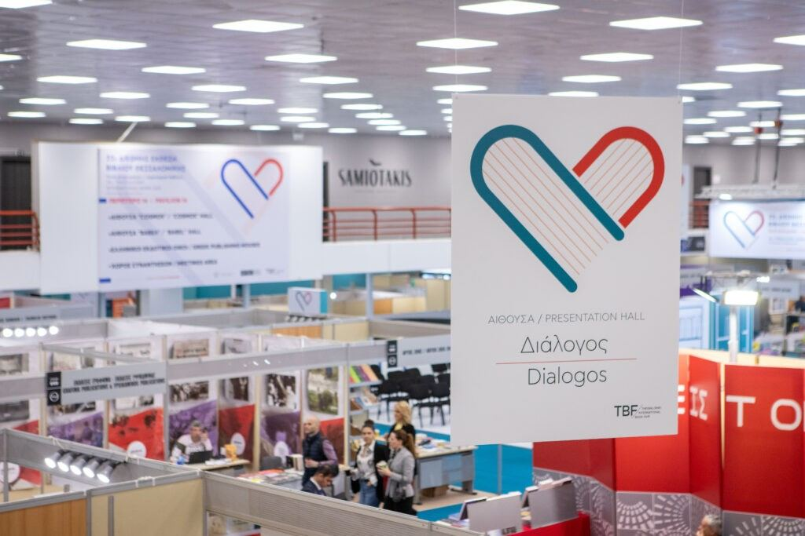

Festivals · Culture
Thessaloniki Book Fair 2027
- Dates
- Dates TBA
- Venue
- Thessaloniki International Exhibition & Congress Centre
- Location
- Thessaloniki, Greece
- Format
- In-person
- Category
- Culture
- Industry
- Book fair
- Organiser
- Hellenic Foundation for Culture / HELEXPO / Municipality of Thessaloniki
- Official website
- https://helexpo.gr/en/exhibitions/23nd-thessaloniki-book-fair/
About
Official HELEXPO 2027 exhibitions list confirms the 23rd Thessaloniki Book Fair at the Thessaloniki International Exhibition & Congress Centre. Official calendar days were not published on the fetched HELEXPO exhibition page (the visible “3 June 2026” stamp is the WordPress post date, not the fair). Conflicting third-party May 2027 ranges were not used.
Topics: books, publishing, literature.
No organiser attendance figure found on the official pages fetched 24 Nov 2026. Ranked by our estimated size tier 'large' (30,000-100,000 attendees/visits), a judgement from format, venue and scale, not an official number.
Sources
- Official — https://helexpo.gr/en/exhibitions/23nd-thessaloniki-book-fair/
- Official — https://www.thessalonikibookfair.gr/
Venue
- Thessaloniki International Exhibition & Congress Centre (HELEXPO) — Exhibition grounds · St. Egnatia 154, 546 36 Thessaloniki, Greece